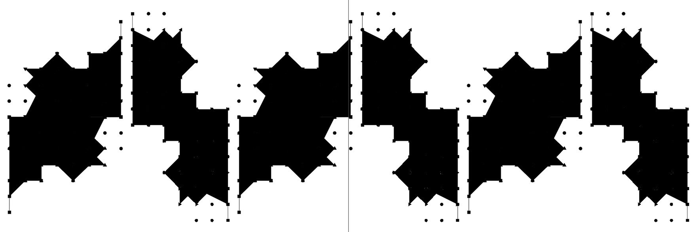

Play-Rulez는 놀이 데이터를 활용한 그래픽 실험 프로젝트이다. Play-Rulez는 놀이의 규칙을 실행하겠다는 의미이기도 하며 동시에 모든 것을 놀이로 접근하겠다는 선언이기도 하다. 놀이의 움직임과 규칙을 데이터로 기록하고 이를 시각화하는 과정에서 만들어진 그래픽을 활용해 상상력을 자극하는 시각적 경험을 제시한다.
이준현, 요한 하위징아의 『호모 루덴스』를 통해 본 놀이와 예술의 관계
요한 하위징아 『호모 루덴스』 버트런드 러셀, 『게으름에 대한 찬양』
리서치 설명 리서치 설명 리서치 설명 리서치 설명 리서치 설명 리서치 설명 리서치 설명 리서치 설명 리서치 설명 리서치 설명 리서치 설명 리서치 설명 리서치 설명 리서치 설명 리서치 설명 리서치 설명 리서치 설명 리서치 설명 리서치 설명 리서치 설명 리서치 설명 리서치 설명 리서치 설명 리서치 설명 리서치 설명 리서치 설명
이미지 자리 — 실험 그래픽 콜라주 (placeholder)
타이포그래피 레퍼런스 (placeholder)
글자 크기를 바꾸면 보이는 문장의 양이 달라집니다.
폰트 설명 폰트 설명 폰트 설명 폰트 설명 폰트 설명 폰트 설명
폰트 설명 폰트 설명 폰트 설명 폰트 설명 폰트 설명 폰트 설명
폰트 설명 폰트 설명 폰트 설명 폰트 설명 폰트 설명 폰트 설명
폰트 설명 폰트 설명 폰트 설명 폰트 설명 폰트 설명 폰트 설명
이미지 자리 — 보드게임 아카이브 (placeholder)
이미지 자리 — 사운드/데이터 시각화 스크린샷 (placeholder)
사운드&영상 설명 사운드&영상 설명 사운드&영상 설명 사운드&영상 설명 사운드&영상 설명 사운드&영상 설명 사운드&영상 설명 사운드&영상 설명 사운드&영상 설명 사운드&영상 설명